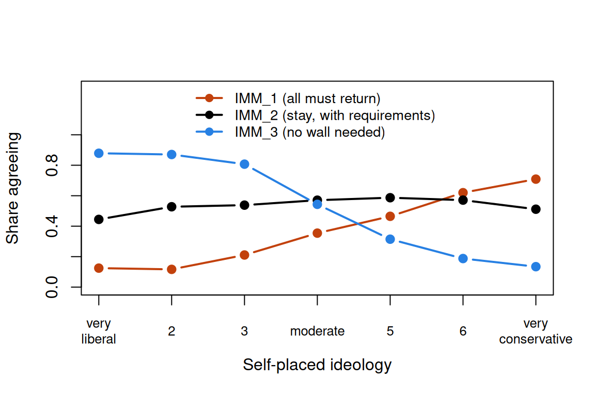
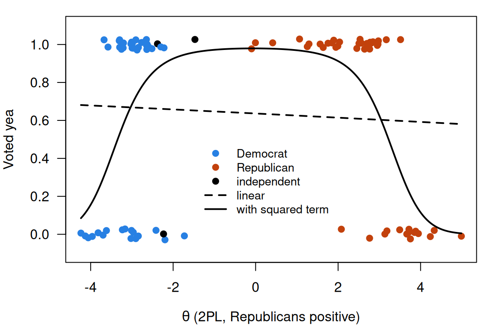

Unfolding models
What this is for
Two different accounts of how a respondent answers an item:
- Dominance. The more of the trait a respondent has, the more likely they are to agree or answer correctly: each item’s curve only rises. Every model in this course so far has assumed this.
- Ideal point. A respondent agrees most with statements close to their own position, and less the farther a statement is from it, in either direction. A statement that stakes out a middle position is rejected from both sides, by respondents who find it too strong and by those who find it too weak, so its curve rises and then falls.
For tests of ability dominance is natural; for attitude statements it can fail. Where CTT breaks found two such statements among eight about capital punishment and left them there. This lesson picks them up: what an unfolding response process leaves in the data, the models written for it (the hyperbolic cosine model, a folded partial credit model, and the GGUM), and what happens when we fit them to real attitude statements. The main example is a survey of immigration attitudes written to span the middle, where a statement that splits the difference is single-peaked even in the raw data and an ideal-point curve predicts it better than a dominance curve. The eight capital-punishment statements show the other side: most sit near the ends, only 54 people answered, and a dominance model does just as well. The last example is the U.S. Senate, whose roll calls political scientists model with “ideal points” that, on inspection, give a dominance curve, and where a few votes still turn over.
Goals
By the end of this lesson you should be able to:
- say what distinguishes an ideal-point (unfolding) response process from a dominance process, and sketch the item curve each implies;
- say what unfolding leaves in the data: runs of agreement in the right order, negative correlations between the ends, and middle statements that correlate with nothing;
- derive the hyperbolic cosine model by folding a three-category partial credit model, and place the GGUM and
mirt’s ideal-point item beside it; - fit dominance, ideal-point and mixed models in R, compare them on held-out responses, and find a statement order with MUDFOLD;
- show why a spatial model of voting, with an ideal point for each legislator, gives a 2PL for each roll call, and say when a vote’s curve can still rise and fall;
- explain why the two kinds of model are hard to tell apart when statements sit near the ends of the scale, and design statements that could tell them apart.
Core ideas
Dominance and ideal points
In a dominance process a respondent agrees when their level exceeds what the statement asks for, as a student solves an item when their ability exceeds its difficulty; every model since The Rasch model has had this form. In an ideal-point process a respondent agrees when the statement is close to their own position. Thurstone (1928) scaled attitude statements by where they sit on a continuum, and Coombs (1964) put respondents and stimuli on one scale, with preference falling off with distance. Each respondent’s preferences are the scale folded at their own position; recovering the scale is unfolding.
Under an ideal-point process the item curve is single-peaked: highest for respondents at the statement’s location \(b\), lower on both sides. So a disagreement is ambiguous. Someone who rejects “I think capital punishment is necessary but I wish it were not” (WISHNOTNEC in Andrich, 1988, worded as in the mudfold help page) may oppose capital punishment outright, or may support it without regret. Drasgow, Chernyshenko and Stark (2010) argue that respondents answer many attitude and personality items this way.
Try it: dominance and ideal points
One statement, located at \(b\). The dominance curve is a 2PL with slope 1.5; the ideal-point curve is the hyperbolic cosine model introduced below, at the same location. The filled markers are a respondent at the chosen \(\theta\); the open marker is a respondent as far from the statement on the other side.
Under the dominance curve the two respondents answer very differently (0.05 and 0.95 at the defaults); under the ideal-point curve they answer alike (0.37 each), since only the distance to \(b\) matters. A disagreement doesn’t say which side the respondent is on. This ideal-point curve never reaches 1: even respondents at the statement’s location sometimes disagree.
What unfolding leaves in the data
Suppose statements and respondents sit on one line, and each respondent agrees with the statements near them. In that order, each respondent’s agreements form one unbroken run: a respondent in the middle agrees with a few middle statements and rejects both ends. Stack the respondents in order and the runs move down the matrix as a diagonal band, a parallelogram in Coombs’s (1964) terms. A dominance process leaves a different shape: in difficulty order, each respondent agrees with everything up to some point, a triangle, as in Guttman’s (1944) scalogram.
Two more consequences follow. Statements at opposite ends are rarely both endorsed, since no respondent sits near both, so they correlate negatively. A statement in the middle is endorsed by respondents who are neither strongly for nor against, so it correlates with nothing.
Try it: the parallelogram
These are the 54 respondents and eight capital-punishment statements from the data section. Each row is a respondent, each column a statement; filled cells are agreements. Rows are sorted by the average position of each respondent’s agreements in the chosen order.
Shuffled (seed 1), the matrix looks scattered, and 5 patterns are single runs; across the 50 seeds most orders give fewer than 10 and none more than 25. In Andrich’s order a band appears, and 39 of the 54 are single runs: respondents who oppose capital punishment agree with the first three or four statements, those in favour with the last three or four, and a few in between with the middle.
Unfolding produces items like m19 by design. A statement in the middle of the scale is neither forward nor reversed: reversing it turns a peak into a trough, and neither correlates with the total. Keying presumes a dominance process.
Models for single-peaked curves
How do we write down a single-peaked curve? One route starts from a model we already have.
A disagreement under an ideal-point process has two sources: disagreeing from below (the statement goes too far) and disagreeing from above (it doesn’t go far enough). Treat these as categories 0 and 2 of a three-category PCM, with agreement as category 1 between them, and put the two steps at \(b - \tau\) and \(b + \tau\). We observe only agree or disagree, so categories 0 and 2 are merged, and what remains is \[\Pr(\text{agree} \mid \theta) = \frac{e^{\tau}}{e^{\tau} + 2\cosh(\theta - b)}.\] This is the hyperbolic cosine model (HCM) of Andrich and Luo (1993); see also Andrich (1997). It is symmetric about \(b\) and peaks there, at \(e^{\tau}/(e^{\tau} + 2)\); \(\tau\) sets how wide the region of agreement is. The Go deeper callout derives it. (Andrich and Luo’s notation differs; we write \(\tau\) to keep \(\lambda\) for loadings.)
Try it: folding the partial credit model
Unfolded, the three curves are an ordinary PCM item. Folded, the two outer curves add up to a trough, and agreement is the single-peaked curve that remains; both routes give the same peak (0.69 at the defaults). With \(\tau = 0\) the peak is \(1/3\); widen the steps and it rises toward 1.
The HCM has a location and a width for each statement, and no slope. The generalized graded unfolding model (GGUM; Roberts, Donoghue & Laughlin, 2000) adds a discrimination for each statement and allows graded agreement, folding each observed category from a response below and one above; the GGUM R package (Tendeiro & Castro-Alvarez, 2019) and mirt fit it. mirt offers a simpler single-peaked item, itemtype = "ideal", following Maydeu-Olivares, Hernández and McDonald (2006): \(\Pr(\text{agree}) = \exp\{-\tfrac{1}{2}a^2(\theta - b)^2\}\), a bell that reaches 1 at \(\theta = b\): an assumption that every respondent located at a statement agrees with it.
The unfolding models keep the first two assumptions and drop the third. Given \(\theta\), agreements are still independent and the likelihood is still a product over statements; only the shape of each curve changes.
There is also a nonparametric counterpart. MUDFOLD (van Schuur, 1992; the mudfold package, Balafas, Krijnen, Post & Wit, 2020) looks for the longest order of statements in which triples behave as unfolding predicts, and reports a scalability coefficient \(H\): one minus the ratio of observed to expected violations, so that 1 means none. It asks for no curve shape, only an order, which makes it a reasonable first look when the question is whether the statements can be placed on one line at all.
Choosing between them is hard
If the curves are so different, why is the choice hard? Because the data only see a curve where there are respondents. Almost every respondent sits to the right of a statement near the “against” end, on the falling side, where the ideal-point curve is a decreasing S. A 2PL with a negative slope draws the same S, and one with a positive slope matches a statement near the “in favour” end. Only in the middle, with respondents on both sides, does the rise and fall show.
Try it: can a 2PL mimic an ideal-point curve?
The solid curve is a hyperbolic cosine item; the dashed curve is the 2PL that best matches it for respondents distributed as \(N(0, 1)\) (shaded).
At \(b = 2.5\) the best 2PL (slope 0.93) stays within 0.03 of the ideal-point curve wherever respondents are. At \(b = 0\) the gap is 0.22 and the best 2PL is flat: it can’t bend. At \(b = -2.5\) the 2PL fits again, with slope −0.93. A dominance model with free signs describes end statements about as well as an ideal-point model; the two separate on middle statements, when enough respondents sit on both sides. Stark, Chernyshenko, Drasgow and Williams (2006) make this comparison for personality items.
A single-peaked curve can only be told from a sloped one where there are respondents on both sides of the peak.
Simulate
The code below simulates 500 respondents answering 20 statements from \(b = -2.5\) to \(2.5\) with mirt’s ideal-point curve (\(a = 1.5\)), fits the 2PL and the ideal-point model, compares AIC (Akaike, 1974), then refits with only the four statements at each end. The first run takes 20–30 seconds while R and mirt load, and the fits about another minute and a half in the browser (15 seconds in local R). Ideal-point fits can stop at a poor local maximum, so the code starts each statement at the average 2PL score of the respondents who agreed with it; remove pars = sv to see what happens without that start.
With the seed as written, the ideal-point model wins easily with all 20 statements (AIC 7,405 against 8,844) and recovers the locations (correlation 0.998). With only the end statements the two are one AIC point apart (2,296 and 2,297), the 2PL with positive slopes at one end and negative at the other. In the plot, the 2PL misses the middle statement and matches the end one. Try np <- 200, or ends <- c(1:2, 9:12, 19:20), which puts four statements back in the middle.
Download this code to run it in your own R session.
With real data
Immigration policy
The main example is a survey written with unfolding in mind. Duck-Mayr and Montgomery (2023) put ten statements about immigration policy to US adults recruited online through Lucid, and fit the GGUM with their bggum package (Duck-Mayr & Montgomery, 2020); their data are public under CC0 (replication data). The IRW has them as duckmayr_2023_immigration. Its job is to be a set of statements written to span the middle, answered by enough respondents to tell the models apart.
The sample is the authors’ analysis sample: 2,621 respondents who passed three attention checks and didn’t straight-line. Responses run from 0 (strongly disagree) to 4 (strongly agree), and nothing is reverse-keyed: which way a statement runs is the question. Two statements stake out the ends: IMM_1, “All undocumented immigrants currently living in the U.S. should be required to return to their home country”, and IMM_3, “The U.S. does not need a wall along the entire U.S.-Mexican border”. One is written for the middle: IMM_2, “There should be a way for undocumented immigrants currently living in the U.S. to stay in the country legally, but only if certain requirements are met like learning English and paying a significant fine” (all three from the survey export in the replication data). The other seven, in brief: current enforcement is fine (IMM_4); detention conditions are humane enough (IMM_5); Congress should trade more immigration for more enforcement (IMM_6); undocumented immigrants commit more serious crime (IMM_7); deport only serious criminals (IMM_8); high-skilled (IMM_9) and low-skilled (IMM_10) immigration help. Respondents also placed themselves on a seven-point scale from very liberal (1) to very conservative (7). Download the code to run every chunk yourself.
Code
library(mirt)
library(GGUM)
library(mudfold)
options(digits = 7) # R's default, in case a .Rprofile changes it
set.seed(52)
# IRW tables are long (one row per response); reshape to one row per respondent.
long2wide <- function(df) {
wide <- tapply(df$resp, list(df$id, df$item), function(x) x[1])
as.data.frame(wide)
}
imm_url <- "https://redivis.com/api/v1/tables/datapages.item_response_warehouse_6:v3_8.duckmayr_2023_immigration/rows?format=csv"
imm_long <- read.csv(imm_url)
imm <- long2wide(imm_long)[, paste0("IMM_", 1:10)]
# 0 = strongly disagree ... 4 = strongly agree, the same way for every statement.
# Nothing is reverse-keyed: which way a statement runs is the question.
c(respondents = nrow(imm), statements = ncol(imm), missing = sum(is.na(imm)))respondents statements missing
2621 10 8 Code
# Self-placed ideology, 1 = very liberal, 4 = moderate, 7 = very conservative.
ideology <- tapply(imm_long$cov_ideology, imm_long$id, function(x) x[1])[rownames(imm)]
table(ideology, useNA = "ifany")ideology
1 2 3 4 5 6 7 <NA>
297 309 223 715 213 464 395 5 Before any model, does agreement with the middle statement rise and fall across the political spectrum? Self-placed ideology is a rough measure of where respondents stand, but enough to look.
Code
# Share agreeing (somewhat or strongly, resp >= 3) with each statement, by ideology.
agree_by_ideo <- sapply(imm, function(x) tapply(x >= 3, ideology, mean, na.rm = TRUE))
round(t(agree_by_ideo), 2) 1 2 3 4 5 6 7
IMM_1 0.12 0.12 0.21 0.35 0.46 0.62 0.71
IMM_2 0.44 0.53 0.54 0.57 0.59 0.57 0.51
IMM_3 0.88 0.87 0.81 0.54 0.31 0.19 0.13
IMM_4 0.18 0.18 0.21 0.22 0.23 0.25 0.26
IMM_5 0.12 0.12 0.11 0.26 0.39 0.59 0.70
IMM_6 0.67 0.79 0.74 0.53 0.53 0.50 0.42
IMM_7 0.07 0.09 0.10 0.22 0.31 0.38 0.56
IMM_8 0.77 0.78 0.73 0.64 0.62 0.55 0.48
IMM_9 0.70 0.67 0.55 0.43 0.48 0.43 0.39
IMM_10 0.79 0.79 0.65 0.50 0.42 0.38 0.31Code
cols <- c(IMM_1 = "#c2410c", IMM_2 = "black", IMM_3 = "#2780e3")
matplot(1:7, agree_by_ideo[, names(cols)], type = "b", pch = 19, lty = 1, lwd = 2,
col = cols, ylim = c(0, 1.3), xaxt = "n", yaxt = "n", xlab = "Self-placed ideology",
ylab = "Share agreeing")
axis(2, at = seq(0, 1, 0.2))
axis(1, at = 1:7, labels = c("very\nliberal", "2", "3", "moderate", "5", "6", "very\nconservative"),
padj = 0.5, cex.axis = 0.8)
legend("top", c("IMM_1 (all must return)", "IMM_2 (stay, with requirements)",
"IMM_3 (no wall needed)"), col = cols, lwd = 2, pch = 19, bty = "n", cex = 0.85)
IMM_1 rises steadily with conservatism (from 0.12 to 0.71 agreeing) and IMM_3 falls (0.88 to 0.13): dominance curves, one in each direction. IMM_2 is single-peaked in the raw data: 0.44 of the very liberal agree, 0.59 of the slightly conservative, and 0.51 of the very conservative. It is rejected from both sides: by those for whom the requirements are too harsh, and by those for whom any legal status goes too far. The correlations agree:
Code
r_imm <- cor(imm, use = "pairwise.complete.obs")
round(r_imm["IMM_2", c("IMM_1", "IMM_3", "IMM_7")], 2) # the middle against the endsIMM_1 IMM_3 IMM_7
-0.09 0.04 0.00 Code
round(r_imm["IMM_1", "IMM_3"], 2) # the two ends[1] -0.62The two ends correlate −0.62, and IMM_2 correlates with neither (−0.09 with IMM_1, 0.04 with IMM_3, 0.00 with IMM_7): the signature of a middle statement. Now the models: the GRM, a dominance model whose slopes may be negative; the GGUM; and a mixed model that gives an ideal-point curve only to the four statements that read as compromises (IMM_2, IMM_4, IMM_6, IMM_8) and a dominance curve to the rest. All three are fitted with mirt; the GGUM’s locations start from the data, since its likelihood has poor local maxima.
Code
# The GRM (dominance, slopes free to be negative) and the GGUM (ideal point), both in
# mirt. The GGUM likelihood has poor local maxima, so we start each statement's
# location at the mean GRM score of the respondents who agreed with it, oriented so
# that IMM_1 ("all must return") is on the positive side, as Duck-Mayr and
# Montgomery anchored it. mirt keeps the GGUM's discriminations positive.
fit_imm <- function(dat, types) {
grm <- mirt(dat, 1, "graded", verbose = FALSE)
th <- fscores(grm)[, 1]
start <- sapply(dat, function(x) mean(th[!is.na(x) & x >= 3]))
if (start["IMM_1"] < 0) start <- -start
sv <- mirt(dat, 1, types, pars = "values")
b1 <- sv$name == "b1"
sv$value[b1] <- 2 * start[sv$item[b1]]
mirt(dat, 1, types, pars = sv, verbose = FALSE)
}
# A third model gives an ideal-point curve only to the four statements that, read
# for their content, stake out a compromise (IMM_2, IMM_4, IMM_6, IMM_8), and a
# dominance curve to the rest.
compromise <- c("IMM_2", "IMM_4", "IMM_6", "IMM_8")
mixed_types <- ifelse(names(imm) %in% compromise, "ggum", "graded")
fits_imm <- list(GRM = mirt(imm, 1, "graded", verbose = FALSE),
GGUM = fit_imm(imm, "ggum"),
mixed = fit_imm(imm, mixed_types))
round(t(sapply(fits_imm, function(f) c(parameters = extract.mirt(f, "nest"),
logLik = extract.mirt(f, "logLik"),
AIC = extract.mirt(f, "AIC"),
BIC = extract.mirt(f, "BIC")))), 1) parameters logLik AIC BIC
GRM 50 -36484.2 73068.4 73361.9
GGUM 60 -36327.2 72774.3 73126.6
mixed 54 -36196.2 72500.4 72817.4Code
# GGUM locations (b1), from the "all must return" end to the "no wall" end.
round(sort(coef(fits_imm$GGUM, simplify = TRUE)$items[, "b1"], decreasing = TRUE), 2) IMM_1 IMM_7 IMM_5 IMM_4 IMM_2 IMM_8 IMM_6 IMM_10 IMM_9 IMM_3
2.46 1.75 1.42 0.03 -0.18 -0.95 -1.14 -1.51 -1.53 -2.64 Code
# How well each model's scores track self-placed ideology (the sign of the GRM's
# scale is arbitrary, so we look at the size).
round(sapply(fits_imm, function(f) abs(cor(fscores(f)[, 1], ideology, use = "complete.obs"))), 2) GRM GGUM mixed
0.64 0.64 0.65 In sample, the GGUM beats the GRM by 294 AIC points (72,774.3 against 73,068.4) and by 235 BIC points, and the mixed model beats both (AIC 72,500.4, BIC 72,817.4) with fewer parameters than the GGUM. The GGUM puts IMM_1 (2.46) and IMM_3 (−2.64) at the ends and IMM_4 (0.03) and IMM_2 (−0.18) in the middle. All three models’ scores correlate 0.64 to 0.65 with self-placed ideology: they agree on who is where and differ on how the middle statements work. But AIC is computed on the responses the models were fitted to. Do the ideal-point curves predict responses they haven’t seen?
Code
# Out of sample: hold out a random 10% of the responses, fit each model to the rest,
# and score the held-out responses with the log probability each model gave them.
M <- as.matrix(imm)
obs <- which(!is.na(M))
hold <- sample(obs, round(0.1 * length(obs)))
train <- M
train[hold] <- NA
train <- as.data.frame(train)
fits_train <- list(GRM = mirt(train, 1, "graded", verbose = FALSE),
GGUM = fit_imm(train, "ggum"),
mixed = fit_imm(train, mixed_types))
i_row <- row(M)[hold]
i_col <- col(M)[hold]
heldout_ll <- sapply(fits_train, function(f) {
th <- fscores(f)[, 1]
mapply(function(i, j) log(probtrace(extract.item(f, j), matrix(th[i]))[1, M[i, j] + 1]),
i_row, i_col)
})
# Mean log probability per held-out response (closer to 0 is better). The baseline
# predicts each statement's category shares, ignoring the respondent.
shares <- apply(train, 2, function(x) prop.table(table(factor(x, levels = 0:4))))
round(c(baseline = mean(log(shares[cbind(M[hold] + 1, i_col)])), colMeans(heldout_ll)), 4)baseline GRM GGUM mixed
-1.5300 -1.3606 -1.3718 -1.3487 Code
# Differences from the GRM, with standard errors over the held-out responses.
d <- heldout_ll[, c("GGUM", "mixed")] - heldout_ll[, "GRM"]
round(rbind(mean = colMeans(d), se = apply(d, 2, sd) / sqrt(nrow(d))), 4) GGUM mixed
mean -0.0112 0.0118
se 0.0078 0.0051Code
# By statement: where does the GGUM predict better (positive) or worse than the GRM?
round(sort(tapply(d[, "GGUM"], colnames(M)[i_col], mean)), 3) IMM_5 IMM_10 IMM_7 IMM_9 IMM_1 IMM_3 IMM_8 IMM_6 IMM_4 IMM_2
-0.065 -0.060 -0.033 -0.029 -0.020 -0.015 -0.007 0.030 0.035 0.060 All three models are well ahead of a baseline that ignores the respondent (−1.5300). The GGUM everywhere does slightly worse than the GRM on held-out responses (a difference of −0.0112, standard error 0.0078): its in-sample advantage doesn’t carry over. Statement by statement, it predicts IMM_2, IMM_4 and IMM_6 better than the GRM (by 0.060, 0.035 and 0.030) and the end statements, such as IMM_5 and IMM_10, worse (by 0.065 and 0.060). The mixed model keeps the gains and avoids the losses, beating the GRM by 0.0118 (standard error 0.0051). One caution: the four compromise statements were chosen by reading them, but after the correlations had been seen, so a set fixed before looking at any data would be a fairer test (problem 2).
Capital punishment, again
The small classic returns from Where CTT breaks: andrich_mudfold, in which 54 graduate students in a measurement course agreed (1) or disagreed (0) with eight statements about capital punishment (Andrich, 1988), as distributed with the mudfold package (Balafas, Krijnen & Wit, 2017); they fill the parallelogram widget. Its job is to show what happens when only two statements sit in the middle and 54 people answer.
Code
mud_url <- "https://redivis.com/api/v1/tables/datapages.item_response_warehouse:v60_0.andrich_mudfold/rows?format=csv"
mud <- long2wide(read.csv(mud_url))
# 1 = agree, 0 = disagree. The statements come in Andrich's order, from most against
# capital punishment to most in favour.
statements <- c("HIDEOUS", "LIFESACRED", "INEFFECTIV", "DONTBELIEV",
"WISHNOTNEC", "MUSTHAVEIT", "DETERRENT", "CRIMDESERV")
mud <- mud[, statements]
c(respondents = nrow(mud), statements = ncol(mud), missing = sum(is.na(mud)))respondents statements missing
54 8 0 Code
r_mud <- cor(mud)
round(r_mud["LIFESACRED", "CRIMDESERV"], 2) # two ends[1] -0.84Code
round(max(abs(r_mud["DONTBELIEV", -4])), 2) # DONTBELIEV's largest |r|[1] 0.18Code
# A pattern "unfolds" in an order if its agreements form one unbroken run
# (e.g. 0 1 1 1 0 0 0 0), which is what one ideal point per respondent predicts.
# A run starts wherever a 1 follows a 0 (or opens the pattern); one run = one start.
X <- as.matrix(mud)
n_runs <- function(order) {
x <- X[, order]
starts <- x[, 1] + rowSums(x[, -1] == 1 & x[, -ncol(x)] == 0)
sum(starts == 1)
}
n_runs(statements) # in Andrich's order[1] 39Code
# Every one of the 8! = 40,320 orders of the statements.
perms <- function(v) if (length(v) == 1) list(v) else
do.call(c, lapply(seq_along(v), function(i) lapply(perms(v[-i]), function(p) c(v[i], p))))
runs_all <- vapply(perms(statements), n_runs, 0)
c(mean_over_all_orders = round(mean(runs_all), 1), best = max(runs_all))mean_over_all_orders best
5.4 40.0 The ends correlate −0.84 (LIFESACRED and CRIMDESERV), and DONTBELIEV’s largest correlation with any statement is 0.18. In Andrich’s order 39 of the 54 patterns are a single run of agreements; across all 40,320 orders the average is 5.4 and the best is 40. The patterns look very much like unfolding.
Code
# Three models in mirt ("ideal" is mirt's ideal-point item,
# P(agree) = exp(-0.5 * (a * theta + d)^2)), and the GGUM with the GGUM package
# (C = 1: two response categories; capture.output() hides its progress bars).
fits_mud <- list(Rasch = mirt(mud, 1, "Rasch", verbose = FALSE),
`2PL` = mirt(mud, 1, "2PL", verbose = FALSE),
ideal = mirt(mud, 1, "ideal", verbose = FALSE))
invisible(capture.output(gg <- GGUM(as.matrix(mud), C = 1)))
round(rbind(t(sapply(fits_mud, function(f) c(parameters = extract.mirt(f, "nest"),
logLik = extract.mirt(f, "logLik"),
AIC = extract.mirt(f, "AIC"),
BIC = extract.mirt(f, "BIC")))),
GGUM = unlist(gg$InformationCrit[c("N.param", "log.L", "AIC", "BIC")])), 1) parameters logLik AIC BIC
Rasch 9 -288.3 594.6 612.5
2PL 16 -195.0 422.0 453.8
ideal 16 -202.3 436.5 468.4
GGUM 24 -187.0 422.1 469.8Code
# 2PL slopes: negative for the statements against, positive for those in favour.
# (The 2PL's EM stops at its iteration limit: CRIMDESERV's slope keeps growing.)
round(coef(fits_mud$`2PL`, IRTpars = TRUE, simplify = TRUE)$items[, "a"], 2) HIDEOUS LIFESACRED INEFFECTIV DONTBELIEV WISHNOTNEC MUSTHAVEIT DETERRENT
-1.44 -7.23 -5.30 -0.11 4.17 4.84 3.26
CRIMDESERV
23.81 Yet the 2PL ties the GGUM on AIC (422.0 against 422.1), and BIC prefers the 2PL (453.8 against 469.8); mirt’s ideal-point model (436.5) and the Rasch model (594.6) trail. The 2PL does what the mimicry widget did: negative slopes for the three statements against (−1.44 to −7.23), positive for the three in favour (CRIMDESERV’s keeps growing, so the EM stops at its limit). Six of the eight statements sit near an end, where a sloped 2PL traces the ideal-point curve, and the two in the middle have too few respondents beyond them to show the fall. With 54 respondents the data can’t tell the models apart; with 2,621 they could.
Party activists
For contrast, eurpar2_mudfold: 1,786 activists in European political parties, each of whom picked the two of six party families in the European Parliament they most preferred, in 1980 (van Schuur, 1984; Post, 1992), also distributed with mudfold. Its job is to show unfolding data in which a sum score carries no information at all: everyone’s is 2, and where an activist stands is in which two parties they chose.
Code
eur_url <- "https://redivis.com/api/v1/tables/datapages.item_response_warehouse:v60_0.eurpar2_mudfold/rows?format=csv"
eur <- long2wide(read.csv(eur_url))
parties <- c("communists", "socdemocr", "demprogres", "liberals", "christians", "conservat")
eur <- eur[, parties]
c(respondents = nrow(eur), missing = sum(is.na(eur)))respondents missing
1786 0 Code
table(parties_picked = rowSums(eur)) # every activist picked exactly twoparties_picked
2
1786 Code
# How often each pair of parties was picked together.
pairs <- apply(eur, 1, function(x) paste(parties[x == 1], collapse = " + "))
sort(table(pairs), decreasing = TRUE)pairs
christians + conservat communists + socdemocr liberals + christians
437 341 217
socdemocr + liberals demprogres + liberals liberals + conservat
202 124 116
socdemocr + demprogres socdemocr + christians demprogres + conservat
106 86 77
demprogres + christians socdemocr + conservat communists + demprogres
50 12 9
communists + conservat communists + liberals communists + christians
4 3 2 Code
# MUDFOLD (van Schuur, 1992; Balafas et al., 2020) looks for the longest order in
# which triples of parties behave as unfolding predicts. H = 1 - observed / expected
# errors in those triples.
mf_eur <- summary(mudfold(eur))
mf_eur$SCALE_STATS["H(scale)", ][1] 0.79Code
mf_eur$ITEM_STATS[, c("items", "H(items)")] # the parties in MUDFOLD's order| items | H(items) |
|---|---|
| communists | 0.96 |
| socdemocr | 0.85 |
| liberals | 0.71 |
| christians | 0.71 |
| conservat | 0.78 |
MUDFOLD orders five of the six parties from left to right (communists, social democrats, liberals, Christian democrats, conservatives), with \(H = 0.79\). The four commonest pairs are the four neighbouring pairs in that order (437 + 341 + 217 + 202 = 1,197 of the 1,786 choices); communists with conservatives came up 4 times. MUDFOLD leaves out the democratic progressives, paired with the liberals (124), social democrats (106) and conservatives (77) alike: a second dimension, or a party chosen for reasons other than left and right, would do that.
Roll calls in the Senate
Political scientists have their own ideal-point models, for legislators’ votes (Poole & Rosenthal, 1985; Clinton, Jackman & Rivers, 2004). rollcall_senate holds every roll call in the Senate from the 110th to the 118th Congress (2007–2024), built from the Senate’s own records (public domain): 1 for yea, 0 for nay, with present and not voting left missing. Its job is to show an ideal-point story that ends in a dominance curve, and the few votes where it doesn’t.
Each senator has an ideal point \(\theta_j\) on a left–right scale. A roll call offers two outcomes, located at \(y_i\) if the yeas win and \(n_i\) if the nays win, and the senator prefers whichever is closer. Poole and Rosenthal’s NOMINATE uses a bell-shaped utility; with the quadratic utility of Clinton, Jackman and Rivers, and a logistic error, the algebra is short:
\[ \operatorname{logit}\Pr(\text{yea}) = (\theta_j - n_i)^2 - (\theta_j - y_i)^2 = 2(y_i - n_i)\,\theta_j - (y_i^2 - n_i^2) = a_i(\theta_j - b_i), \]
with \(a_i = 2(y_i - n_i)\) and \(b_i = (y_i + n_i)/2\). The utility is single-peaked, but the vote is a 2PL. The slope’s sign says which side of the chamber the yea outcome sits on, and \(b_i\), the midpoint between the outcomes, is the cutting point: senators to one side vote yea, those to the other nay. Nothing folds, because the vote is a choice between two positions, both on the scale. A survey respondent who disagrees with a statement isn’t choosing a second statement, so disagreement can come from either side. Clinton, Jackman and Rivers assume a normal error, which makes the curve a probit rather than a logistic.
We take the 118th Congress (2023–2024), in which the Democrats held the Senate by a seat or two. Clinton, Jackman and Rivers fit the model in a Bayesian way; here mirt fits the same 2PL with normal priors on the slopes and intercepts, since on a party-line vote the parties separate perfectly and the slope would otherwise grow without bound.
Code
# Every roll call in the 118th Senate (2023-24): 1 = yea, 0 = nay; present and not
# voting are missing. Item ids are <congress>_<session>_<roll call>.
sen_url <- "https://redivis.com/api/v1/tables/datapages.item_response_warehouse_6:v3_7.rollcall_senate/rows?format=csv"
sen_long <- read.csv(sen_url)
sen_long <- sen_long[startsWith(sen_long$item, "118_"), ]
sen <- long2wide(sen_long)
party <- tapply(sen_long$cov_party, sen_long$id, function(x) paste(unique(x), collapse = "/"))[rownames(sen)]
c(senators = nrow(sen), roll_calls = ncol(sen)) senators roll_calls
104 691 Code
# Drop senators who cast fewer than 50 votes (two appointed in the last weeks) and
# near-unanimous votes (under 2.5% on the losing side), which say little about
# where anyone stands.
minority <- sapply(sen, function(x) min(mean(x, na.rm = TRUE), 1 - mean(x, na.rm = TRUE)))
sen <- sen[rowSums(!is.na(sen)) >= 50, minority >= 0.025]
party <- party[rownames(sen)]
c(senators = nrow(sen), roll_calls = ncol(sen), missing = round(mean(is.na(sen)), 3)) senators roll_calls missing
102.000 659.000 0.068 Code
table(party) # D/I: changed from Democrat to independent during the Congressparty
D D/I I R
49 1 3 49 Code
# The question for each vote, as the Senate recorded it (IRW item text).
txt_url <- "https://redivis.com/api/v1/tables/datapages.irw_text_3:v1_2.rollcall_senate__items/rows?format=csv"
txt <- read.csv(txt_url)
txt <- txt[txt$resp == 1, ]
question <- setNames(txt$item_text, txt$item)[names(sen)]Code
# A 2PL whose slopes may be negative. On a party-line vote the parties separate
# perfectly and the slope can grow without bound, so normal priors keep the slopes
# and intercepts finite (a Bayesian fit of the same model is Clinton, Jackman and
# Rivers's). Takes about 40 seconds.
J <- ncol(sen)
spec <- mirt.model(sprintf("F = 1-%d\nPRIOR = (1-%d, a1, norm, 0, 2), (1-%d, d, norm, 0, 4)", J, J, J))
fit_sen <- mirt(sen, spec, "2PL", quadpts = 31, verbose = FALSE)
theta <- fscores(fit_sen)[, 1]
slope <- coef(fit_sen, simplify = TRUE)$items[, "a1"]
# The direction of theta is arbitrary; point it so that Republicans are positive.
if (mean(theta[party == "R"]) < 0) { theta <- -theta; slope <- -slope }
round(t(sapply(split(theta, party), range)), 2) [,1] [,2]
D -4.24 -1.73
D/I -0.79 -0.79
I -2.38 -1.47
R -0.10 4.99Code
# Nominations against everything else: which side is the yea on?
kind <- ifelse(grepl("PN[0-9]", question), "nomination", "other")
table(slope = ifelse(slope > 0, "yea to the right", "yea to the left"), kind) kind
slope nomination other
yea to the left 434 88
yea to the right 4 133With Republicans pointed positive, the parties don’t overlap: Democrats run from −4.24 to −1.73 and Republicans from −0.10 to 4.99. The three independents sit among the Democrats (−2.38 to −1.47), and Joe Manchin, who left the Democrats to sit as an independent in 2024, falls between the parties (−0.79). On 522 of the 659 roll calls the yea lies to the left, including 434 of the 438 nominations: in 2023–2024 the nominees were a Democratic president’s, brought up by a Democratic majority. Of the other 221 votes, 133 put the yea to the right. The negative slopes aren’t reversed items. They say which way each question was put.
Is every vote a dominance item, then? The algebra assumes each senator weighs only the distance to the two outcomes, on one scale. When both ends of the chamber oppose a bill for opposite reasons, one side because it goes too far and the other because it doesn’t go far enough, the curve rises and falls, the pattern Duck-Mayr and Montgomery (2023) call “ends against the middle”.
We screen every vote with the check from Where CTT breaks: a logistic regression of the vote on the 2PL score, with and without a squared term. A vote is flagged if the squared term is negative, the fitted curve peaks inside the range of the scores, and the AIC improves by more than 10.
Code
# For each vote, a logistic regression on theta with and without a squared term,
# as in "Where CTT breaks". A vote whose curve rises and falls gets a negative
# squared term, a peak inside the range of theta, and a better AIC.
screen <- t(sapply(sen, function(y) {
m1 <- suppressWarnings(glm(y ~ theta, binomial))
m2 <- suppressWarnings(glm(y ~ theta + I(theta^2), binomial))
b <- coef(m2)
c(AIC_gain = AIC(m1) - AIC(m2), squared = unname(b[3]), peak = unname(-b[2] / (2 * b[3])))
}))
peaked <- screen[, "AIC_gain"] > 10 & screen[, "squared"] < 0 &
screen[, "peak"] > min(theta) & screen[, "peak"] < max(theta)
sum(peaked)[1] 21Code
top <- screen[peaked, ][order(-screen[peaked, "AIC_gain"]), ]
data.frame(round(top, 2), question = substr(question[rownames(top)], 1, 70))| AIC_gain | squared | peak | question | |
|---|---|---|---|---|
| 118_2_00150 | 31.16 | -0.36 | -0.06 | On Passage of the Bill H.R. 7888 – A bill to reform the Foreign Intel |
| 118_1_00342 | 26.94 | -0.30 | -0.04 | On the Motion (Motion to Waive the Rule 28 Point of Order Re: Section |
| 118_1_00069 | 25.92 | -0.44 | 1.58 | On the Amendment S.Amdt. 43 to S. 316 (No short title on file) – To p |
| 118_2_00141 | 24.01 | -0.29 | -0.27 | On the Cloture Motion H.R. 7888 – A bill to reform the Foreign Intell |
| 118_2_00154 | 22.42 | -0.45 | -0.59 | On the Motion (Motion to Concur in the House Amendment to the Senate A |
| 118_1_00074 | 19.02 | -0.28 | 1.40 | On the Amendment S. 316 – A bill to repeal the authorizations for use |
| 118_2_00084 | 18.75 | -0.59 | -0.79 | On the Motion (Schumer Motion to Concur in the House Amendment to the |
| 118_2_00194 | 16.80 | -0.37 | 0.57 | On the Nomination PN1471 – Lindsay S. See, of West Virginia, to be a |
| 118_2_00192 | 16.31 | -0.32 | -0.83 | On the Nomination PN1470 – David Rosner, of Massachusetts, to be a Me |
| 118_1_00341 | 15.03 | -0.26 | 0.08 | On the Cloture Motion H.R. 2670 – A bill to authorize appropriations |
| 118_2_00143 | 15.02 | -0.23 | -0.31 | On the Motion to Proceed H.R. 7888 – A bill to reform the Foreign Int |
| 118_2_00048 | 14.79 | -0.33 | -1.02 | On Passage of the Bill H.R. 815 – A bill to amend title 38, United St |
| 118_2_00152 | 13.73 | -0.35 | -0.81 | On the Cloture Motion H.R. 815 – A bill to amend title 38, United Sta |
| 118_1_00146 | 13.35 | -0.30 | -1.16 | On Passage of the Bill H.R. 3746 – A bill to provide for a responsibl |
| 118_2_00122 | 12.17 | -0.52 | 1.71 | On the Joint Resolution H.J.Res. 98 – A joint resolution providing fo |
| 118_1_00277 | 11.77 | -0.41 | 1.33 | On the Amendment S.Amdt. 1200 to S.Amdt. 1092 to H.R. 4366 (No short t |
| 118_1_00066 | 11.62 | -0.24 | 2.02 | On the Amendment S.Amdt. 14 to S. 316 (No short title on file) – To p |
| 118_2_00061 | 11.41 | -0.54 | 1.64 | On Overriding the Veto S.J.Res. 38 – A joint resolution providing for |
| 118_1_00303 | 11.34 | -0.54 | 1.66 | On the Joint Resolution S.J.Res. 38 – A joint resolution providing fo |
| 118_1_00334 | 10.61 | -0.22 | -0.07 | On the Motion to Proceed H.R. 2670 – A bill to authorize appropriatio |
| 118_1_00073 | 10.44 | -0.24 | 2.07 | On the Amendment S. 316 – A bill to repeal the authorizations for use |
Code
# Final passage of the FISA reauthorization, 19 April 2024: each senator's vote
# against theta, with the linear and squared logistic curves.
fisa <- "118_2_00150"
y <- sen[[fisa]]
table(party, vote = c("nay", "yea")[y + 1], useNA = "ifany") vote
party nay yea <NA>
D 17 28 4
D/I 0 0 1
I 1 2 0
R 16 30 3Code
# Median theta of each party's yeas and nays.
round(tapply(theta, list(party, vote = c("nay", "yea")[y + 1]), median), 2) vote
nay yea
D -3.17 -2.94
D/I NA NA
I -2.23 -1.93
R 3.72 2.48Code
grid_th <- seq(min(theta), max(theta), length.out = 200)
m1 <- glm(y ~ theta, binomial)
m2 <- glm(y ~ theta + I(theta^2), binomial)
op <- par(mar = c(4, 4, 1, 1))
plot(theta, jitter(y, 0.15), pch = 19, las = 1, ylim = c(-0.1, 1.1),
col = ifelse(party == "R", "#c2410c", ifelse(party == "D", "#2780e3", "black")),
xlab = expression(theta ~ "(2PL, Republicans positive)"), ylab = "Voted yea")
lines(grid_th, predict(m1, data.frame(theta = grid_th), type = "response"), lwd = 2, lty = 2)
lines(grid_th, predict(m2, data.frame(theta = grid_th), type = "response"), lwd = 2)
legend(-1.3, 0.5, c("Democrat", "Republican", "independent", "linear", "with squared term"),
col = c("#2780e3", "#c2410c", "black", "black", "black"), pch = c(19, 19, 19, NA, NA),
lty = c(NA, NA, NA, 2, 1), lwd = 2, bty = "n", cex = 0.85)
Code
par(op)Twenty-one of the 659 roll calls are flagged. Most are votes where a coalition of the middle met opposition from both ends: final passage of the FISA reauthorization (AIC gain 31.2) and two procedural votes on it; the defense authorization of 2023; repeal of the 2002 authorization to use military force in Iraq, with amendments to it; the foreign-aid package for Ukraine and Israel in 2024; and the debt-ceiling deal of 2023. The rest are a spending package, two nominations to the energy regulator, an amendment barring funds to Chinese entities, and three votes on two resolutions to overturn agency rules. The FISA vote splits both parties (28 Democrats yea and 17 nay, 30 Republicans yea and 16 nay). The Republican nays come from the party’s right end (median score 3.72, against 2.48 for its yeas); the Democratic nays lean to its left end, less sharply (−3.17 against −2.94). A line through the plot is nearly flat; the curve with a squared term turns over.
Look at where the peak sits, though: in the gap between the parties, where only two senators are. As in the mimicry widget, the data see a curve only where there are respondents. They show that both ends voted nay, but not the shape of the curve in between. The other 638 votes show no such turn, which is why a monotone model serves for most roll calls. Whether the flagged votes call for a folded curve, or for a second dimension on which the ends agree, is a question the data could be asked (problem 6).
Problems
- Folding the PCM. Starting from a three-category PCM with steps \(b - \tau\) and \(b + \tau\), derive \(\Pr(\text{agree}) = e^{\tau}/(e^{\tau} + 2\cosh(\theta - b))\). Show that the curve peaks at \(\theta = b\), find the height of the peak, and show that far from \(b\) the log odds of agreeing fall by one for each unit of \(\theta\).
- Read, then fit (PS9#3). Read the ten immigration statements (the full wording is in the replication data’s
lucid_data.tab, and summarized above) and, before looking at any more output, say which you’d give an ideal-point curve and why. Fit the mixed model with your set in place ofcompromise, using a new seed for the held-out responses. Does your set beat the GRM out of sample? Then do the same for the eight capital-punishment statements (Andrich, 1988), where the 2PL andmirt’s"ideal"item can be mixed the same way. Where did the data agree with your reading, and where couldn’t they say? - Judgment. DONTBELIEV correlates with no other statement above 0.18, gets a 2PL slope of −0.11, and gets a GGUM location near 0. With 54 respondents, what could change your mind about whether it follows an ideal-point process? What would you look for in a new sample, and roughly how large would it need to be?
- Design. Write eight statements about a policy you know well, for 300 respondents, so that a dominance model and an unfolding model could be told apart. Where on the scale must the statements sit, and where must the respondents be? Check your design in the simulation: set
deltato your planned locations andnpto 300, and see whether the ideal-point model wins. - Order from pairs. In
eurpar2_mudfold, recover a left-to-right order of the six parties from the pair counts alone (for example, treat the counts as similarities and scale them in one dimension withcmdscale). Compare with MUDFOLD’s order. Where do the democratic progressives land, and does that fit what the counts showed? - Folded curve or second dimension? For the 21 flagged roll calls, fit two models to the 118th Senate: a 2PL with
mirt’s"ideal"item for the flagged votes, and a two-dimensional 2PL for all of them (keep the priors). Compare them on held-out votes, as with the immigration statements. The flagged votes were chosen by the same scores, so how would you make the comparison fair? - Across Congresses.
rollcall_senatecovers the 110th to the 118th Congress, and many senators served in several. Fit the 117th and 118th separately and put their scores on one scale through the senators who served in both, a common-person design (see Linking and equating). What does this assume about those senators, and how would you check it? - Challenge (open). The GGUM wins in sample on the immigration statements and loses out of sample. Is that overfitting, a problem with scoring respondents whose posterior for \(\theta\) has two humps, or something else? How would you find out? Or: are some personality items ideal-point items? Stark et al. (2006) argue that some are. Pick an IRW personality table with Likert items and say how you would find out; then try it, fitting the GRM and the GGUM (
mirt’sitemtype = "ggum") and comparing the curves. Or model the rankings in franco_2024_unfolding. I don’t know the answer for either.
Going further
- Thurstone, L. L. (1928). Attitudes can be measured. American Journal of Sociology, 33(4), 529–554. https://doi.org/10.1086/214483. Attitude statements placed on a continuum by where they sit.
- Coombs, C. H. (1964). A theory of data. Wiley. https://openlibrary.org/works/OL1361275W. Unfolding, the parallelogram and the geometry of preference. Flament’s (1966) review summarizes it.
- Guttman, L. (1944). A basis for scaling qualitative data. American Sociological Review, 9(2), 139–150. https://doi.org/10.2307/2086306. The scalogram, the dominance pattern the parallelogram is set against.
- Duck-Mayr, J., & Montgomery, J. (2023). Ends against the middle: Measuring latent traits when opposites respond the same way for antithetical reasons. Political Analysis, 31(4), 606–625. https://doi.org/10.1017/pan.2022.33. The immigration statements, and the GGUM for survey and roll-call data. Data: Duck-Mayr & Montgomery (2023), replication data, Harvard Dataverse, https://doi.org/10.7910/DVN/HXORK9 (CC0); the IRW table
duckmayr_2023_immigrationis to follow. - Poole, K. T., & Rosenthal, H. (1985). A spatial model for legislative roll call analysis. American Journal of Political Science, 29(2), 357–384. https://doi.org/10.2307/2111172. NOMINATE: legislators’ ideal points from roll calls.
- Clinton, J., Jackman, S., & Rivers, D. (2004). The statistical analysis of roll call data. American Political Science Review, 98(2), 355–370. https://doi.org/10.1017/S0003055404001194. Quadratic utility, the resulting item response model, and a Bayesian fit.
- Duck-Mayr, J., & Montgomery, J. (2020). bggum: Bayesian estimation of generalized graded unfolding model parameters [R package]. https://doi.org/10.32614/CRAN.package.bggum. The package the authors fit the GGUM with.
- Andrich, D. (1988). The application of an unfolding model of the PIRT type to the measurement of attitude. Applied Psychological Measurement, 12(1), 33–51. https://doi.org/10.1177/014662168801200105. The capital-punishment statements and a model for them.
- Andrich, D., & Luo, G. (1993). A hyperbolic cosine latent trait model for unfolding dichotomous single-stimulus responses. Applied Psychological Measurement, 17(3), 253–276. https://doi.org/10.1177/014662169301700307. The hyperbolic cosine model.
- Andrich, D. (1997). A hyperbolic cosine IRT model for unfolding direct responses of persons to items. In W. J. van der Linden & R. K. Hambleton (Eds.), Handbook of modern item response theory (pp. 399–414). Springer. https://doi.org/10.1007/978-1-4757-2691-6_23. The model as a handbook chapter.
- Andrich, D. (2016). Hyperbolic cosine model for unfolding responses. In W. J. van der Linden (Ed.), Handbook of item response theory: Vol. 1. Models (pp. 353–367). Chapman and Hall/CRC. https://doi.org/10.1201/9781315374512. A handbook chapter on the hyperbolic cosine unfolding model, by its originator.
- Roberts, J. S., Donoghue, J. R., & Laughlin, J. E. (2000). A general item response theory model for unfolding unidimensional polytomous responses. Applied Psychological Measurement, 24(1), 3–32. https://doi.org/10.1177/01466216000241001. The GGUM.
- Roberts, J. S. (2016). Generalized graded unfolding model. In W. J. van der Linden (Ed.), Handbook of item response theory: Vol. 1. Models (pp. 369–390). Chapman and Hall/CRC. https://doi.org/10.1201/9781315374512. A handbook chapter on the generalized graded unfolding model.
- Tendeiro, J. N., & Castro-Alvarez, S. (2019). GGUM: An R package for fitting the generalized graded unfolding model. Applied Psychological Measurement, 43(2), 172–173. https://doi.org/10.1177/0146621618772290. The package used here.
- Maydeu-Olivares, A., Hernández, A., & McDonald, R. P. (2006). A multidimensional ideal point item response theory model for binary data. Multivariate Behavioral Research, 41(4), 445–472. https://doi.org/10.1207/s15327906mbr4104_2. A bell-shaped ideal-point item for binary data, the form of
mirt’s"ideal"itemtype. - van Schuur, W. H. (1992). Nonparametric unidimensional unfolding for multicategory data. Political Analysis, 4, 41–74. https://doi.org/10.1093/pan/4.1.41. MUDFOLD, and unfolding without a parametric curve.
- Balafas, S. E., Krijnen, W. P., Post, W. J., & Wit, E. C. (2020). mudfold: An R package for nonparametric IRT modelling of unfolding processes. The R Journal, 12(1), 49–75. https://doi.org/10.32614/rj-2020-002. The
mudfoldpackage, which distributes both data sets. - Drasgow, F., Chernyshenko, O. S., & Stark, S. (2010). 75 years after Likert: Thurstone was right! Industrial and Organizational Psychology, 3(4), 465–476. https://doi.org/10.1111/j.1754-9434.2010.01273.x. The case for ideal-point models of attitude and personality items.
- Stark, S., Chernyshenko, O. S., Drasgow, F., & Williams, B. A. (2006). Examining assumptions about item responding in personality assessment: Should ideal point methods be considered for scale development and scoring? Journal of Applied Psychology, 91(1), 25–39. https://doi.org/10.1037/0021-9010.91.1.25. Dominance and ideal-point models compared on personality items (problem 8).
- Brown, A. (2016). Item response models for forced-choice questionnaires: A common framework. Psychometrika, 81(1), 135–160. https://doi.org/10.1007/s11336-014-9434-9. Choice formats under dominance and ideal-point processes.
- Chalmers, R. P. (2012). mirt: A multidimensional item response theory package for the R environment. Journal of Statistical Software, 48(6). https://doi.org/10.18637/jss.v048.i06. The package, whose
itemtypelist includes the ideal-point, GGUM and hyperbolic cosine items. - Akaike, H. (1974). A new look at the statistical model identification. IEEE Transactions on Automatic Control, 19(6), 716–723. https://doi.org/10.1109/TAC.1974.1100705. The AIC.
Data sources
Data from the Item Response Warehouse (each table name links to its IRW page); references from IRW biblio.
duckmayr_2023_immigration: Duck-Mayr, J., & Montgomery, J. (2023). Ends against the middle: Measuring latent traits when opposites respond the same way for antithetical reasons. Political Analysis, 31(4), 606-625. https://doi.org/10.1017/pan.2022.33. Licence: CC0 1.0.andrich_mudfold: Andrich, D. (1988). The application of an unfolding model of the PIRT type to the measurement of attitude. Applied psychological measurement, 12(1), 33-51. https://doi.org/10.1177/014662168801200105. Licence: GPL-3.0.eurpar2_mudfold: Schuur, H. V. (1984). Structure in political beliefs: A new model for stochastic unfolding with application to European party activists (Doctoral dissertation, Rijksuniversiteit te Groningen). https://cran.r-project.org/web/packages/mudfold/index.html. Licence: GPL-3.0.rollcall_senate: Secretary of the Senate, U.S. Senate. Roll call votes (LIS XML), https://www.senate.gov/legislative/votes_new.htm. Licence: CC0 1.0.
For instructors
- Source: EDUC 252 class 9 (slides c9, 13–14, “The unfolding model”), problem set 9 (#3, “Dominant or unfolding?”) and problem set 2 (#5c, now in Where CTT breaks); code in
ben-domingue/252:ps9/unfold.R. Slide 14’s pointer to Andrich’s handbook chapter is Andrich (1997). - Timing: the core ideas and widgets take about 45 minutes; the analyses work as a 30-minute lab. The real-data code takes about four minutes in local R, most of it the held-out comparison, the GGUM fits and the Senate 2PL (about 40 seconds).
- Changed from 252: PS9#3 compared the Rasch and ideal-point models on the capital-punishment statements. The main example is now Duck-Mayr and Montgomery’s (2023) immigration survey (Ben, 09-25), with the GRM, the GGUM and a mixed model compared in and out of sample; the capital-punishment analysis adds the 2PL (so the dominance model can have negative slopes) and the GGUM. The
GGUMpackage doesn’t run in the browser, so the GGUM is fitted only in the real-data section, at render time; Simulate usesmirt. The Senate roll calls are new (Ben, 09-26, after irw PR #2451 builtrollcall_senate): they show that the political scientists’ ideal-point model is a 2PL, and screen for the votes where it isn’t. - Reuse:
andrich_mudfoldalso appears in Where CTT breaks, where the two middle statements’ curves turn over against a score on the other six. - Held back: multidimensional unfolding; rankings and paired comparisons as unfolding data (
franco_2024_unfolding, problem 8 only); ideal-point models for personality items (problem 8 only); graded (Likert) unfolding beyond a mention of the GGUM. Roll calls: the House table (rollcall_house), Congresses before the 118th, dynamic ideal points across Congresses (problem 7 only), NOMINATE itself, and a second dimension (problem 6 only). - Item text: three immigration statements (IMM_1, IMM_2, IMM_3) are quoted from the survey export in the replication data (CC0), checked word for word; the other seven are summarized. Of the capital-punishment statements only WISHNOTNEC is quoted (as in Where CTT breaks), in the wording of the
mudfoldpackage’sANDRICHhelp page, cited to Andrich (1988); it hasn’t been checked against the printed article. The Senate vote questions come from the IRW item text, which reproduces the Senate’s own records (public domain); the lesson paraphrases them. - Solutions: held back in
solutions/unfolding.qmd(not published); problems 6 and 7 (roll calls) have no solutions yet. Problem 8 is open.